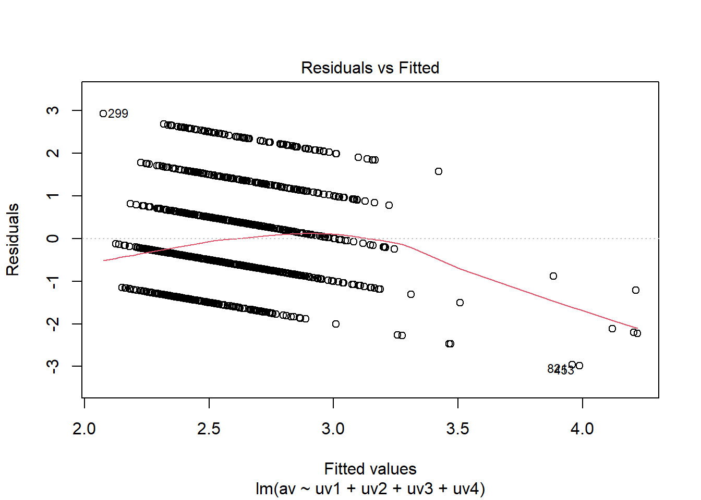

##Arbeitsverzeichnis checken
getwd()[1] "C:/Users/antje/Documents/studium PUK/Master-Publizistik/STUDIENASSISTENZ/Test Tutorial"Dieses Tutorial gibt eine Einführung in die multiple Regressionsanalyse. Sie lernen, wie man:
Wie immer prüfen wir zuerst mit “getwd()”, unter welchem Pfad unser Arbeitsverzeichnis ist. Alle Skripte und Datensätze, mit denen wir arbeiten wollen, sollten in diesem Ordner abgelegt sein.
##Arbeitsverzeichnis checken
getwd()[1] "C:/Users/antje/Documents/studium PUK/Master-Publizistik/STUDIENASSISTENZ/Test Tutorial"Dann laden wir wieder mit dem Paket “pacman” die nötigen R-Pakete.
##Pakete installieren und laden
if (!require("pacman")) {install.packages("pacman"); library(pacman)}Lade nötiges Paket: pacmanp_load(tidyverse, car, lmtest, QuantPsyc)Für diese Übung verwenden wir wieder den Datensatz aus dem European Social Survey: ESS Round 8 (2016): integrated file, edition 2.3, zu finden unter: https://ess-search.nsd.no/en/study/f8e11f55-0c14-4ab3-abde-96d3f14d3c76
Wir arbeiten mit dem gefilterten Datensatz aus Übung 5 weiter, der die folgenden Variablen für die österreichischen Befragten enthält: Gender (gndr), Age of respondent calculated (agea), News about politics and current affairs (nwspol), Internet use (netustm), Confident in own ability to participate (cptppola).
#Datensatz laden
df <- read.csv("data/ESS8e02_3_AT.csv")#Datensatz inspizieren
glimpse(df)
class(df)
head(df)
View(df)Wir rechnen eine Regressionsanalyse mit den folgenden UVs: Gender (gndr), Age of respondent calculated (agea), News about politics and current affairs (nwspol), Internet use (netustm) und der AV: Confident in own ability to participate (cptppola).
Mit dem unten stehenden Code, der Ihnen aus den vorigen Übungen bekannt ist, definieren wir unsere UV und AV und vergeben die zugehörigen Labels.
#UV und AV definieren
df$uv1 <- df$nwspol
df$uv2 <- df$netustm
df$uv3 <- df$gndr
df$uv4 <- df$agea
df$av <- df$cptppola
#Labels vergeben
label_uv1 <- "Politischer Nachrichtenkonsum"
label_uv2 <- "Internetnutzung"
label_uv3 <- "Geschlecht"
label_uv4 <- "Alter"
label_av <- "Partizipationsfähigkeit"
glimpse(df)Rows: 2,010
Columns: 13
$ X <int> 1, 2, 3, 4, 5, 6, 7, 8, 9, 10, 11, 12, 13, 14, 15, 16, 17, 18…
$ idno <int> 1, 2, 4, 6, 10, 11, 12, 13, 14, 15, 16, 17, 18, 19, 21, 22, 2…
$ gndr <int> 2, 1, 2, 1, 2, 2, 2, 2, 2, 2, 2, 1, 1, 2, 2, 1, 1, 1, 2, 2, 2…
$ agea <int> 34, 52, 68, 54, 20, 65, 52, 44, 22, 41, 57, 61, 50, 31, 58, 2…
$ nwspol <int> 120, 120, 30, 30, 30, 60, 15, 45, 10, 60, 30, 90, 15, 30, 20,…
$ netustm <int> 180, 120, 6666, 120, 180, 120, 6666, 30, 120, 120, 6666, 90, …
$ cptppola <int> 3, 3, 2, 4, 1, 2, 1, 2, 2, 2, 1, 3, 1, 2, 1, 2, 4, 3, 1, 2, 1…
$ netusoft <int> 4, 5, 2, 5, 5, 5, 2, 4, 5, 4, 1, 4, 4, 4, 1, 5, 5, 5, 4, 5, 1…
$ uv1 <int> 120, 120, 30, 30, 30, 60, 15, 45, 10, 60, 30, 90, 15, 30, 20,…
$ uv2 <int> 180, 120, 6666, 120, 180, 120, 6666, 30, 120, 120, 6666, 90, …
$ uv3 <int> 2, 1, 2, 1, 2, 2, 2, 2, 2, 2, 2, 1, 1, 2, 2, 1, 1, 1, 2, 2, 2…
$ uv4 <int> 34, 52, 68, 54, 20, 65, 52, 44, 22, 41, 57, 61, 50, 31, 58, 2…
$ av <int> 3, 3, 2, 4, 1, 2, 1, 2, 2, 2, 1, 3, 1, 2, 1, 2, 4, 3, 1, 2, 1…Als nächstes definieren wir mit der Funktion “Recode” wieder die fehlenden/ungültigen Werte als “NA”. Um diese Werte zu indentifizieren, hilft uns wieder ein Blick ins zugehörige Codebuch.
#Fehlende Werte umkodieren
df$uv1 <- Recode((df$uv1),
'7777 = NA; 8888 = NA; 9999 = NA')
df$uv2 <- Recode((df$uv2),
'6666= NA; 7777 = NA; 8888 = NA; 9999 = NA')
df$uv3 <- Recode((df$uv3),
'9 = NA')
df$uv4 <- Recode((df$uv4),
'999 = NA')
df$av <- Recode((df$av),
'7 = NA; 8 = NA; 9 = NA')
glimpse(df)Rows: 2,010
Columns: 13
$ X <int> 1, 2, 3, 4, 5, 6, 7, 8, 9, 10, 11, 12, 13, 14, 15, 16, 17, 18…
$ idno <int> 1, 2, 4, 6, 10, 11, 12, 13, 14, 15, 16, 17, 18, 19, 21, 22, 2…
$ gndr <int> 2, 1, 2, 1, 2, 2, 2, 2, 2, 2, 2, 1, 1, 2, 2, 1, 1, 1, 2, 2, 2…
$ agea <int> 34, 52, 68, 54, 20, 65, 52, 44, 22, 41, 57, 61, 50, 31, 58, 2…
$ nwspol <int> 120, 120, 30, 30, 30, 60, 15, 45, 10, 60, 30, 90, 15, 30, 20,…
$ netustm <int> 180, 120, 6666, 120, 180, 120, 6666, 30, 120, 120, 6666, 90, …
$ cptppola <int> 3, 3, 2, 4, 1, 2, 1, 2, 2, 2, 1, 3, 1, 2, 1, 2, 4, 3, 1, 2, 1…
$ netusoft <int> 4, 5, 2, 5, 5, 5, 2, 4, 5, 4, 1, 4, 4, 4, 1, 5, 5, 5, 4, 5, 1…
$ uv1 <int> 120, 120, 30, 30, 30, 60, 15, 45, 10, 60, 30, 90, 15, 30, 20,…
$ uv2 <int> 180, 120, NA, 120, 180, 120, NA, 30, 120, 120, NA, 90, 90, 18…
$ uv3 <int> 2, 1, 2, 1, 2, 2, 2, 2, 2, 2, 2, 1, 1, 2, 2, 1, 1, 1, 2, 2, 2…
$ uv4 <int> 34, 52, 68, 54, 20, 65, 52, 44, 22, 41, 57, 61, 50, 31, 58, 2…
$ av <int> 3, 3, 2, 4, 1, 2, 1, 2, 2, 2, 1, 3, 1, 2, 1, 2, 4, 3, 1, 2, 1…Für die weiteren Analysen schließen wir die Fälle mit fehlenden Werten aus. Dies erreichen wir wieder mit der Funktion “drop_na”, die wir auf beide Variablen, UV und AV, anwenden. Es werden also alle Fälle ausgeschlossen, die fehlende Werte in einer der UVs oder der AV aufweisen.
#Fälle mit fehlenden Werten ausschließen
df <- drop_na(df, uv1, uv2, uv3, uv4, av)Um einen ersten Eindruck über die Verteilungen der Daten zu gewinnen, erstellen wir Boxplots für die AV und die metrischen UVs.
Haben alle Variablen das nötige Skalenniveau?
boxplot(df$av, main = label_av)
boxplot(df$uv1, main = label_uv1)
boxplot(df$uv2, main = label_uv2)
boxplot(df$uv4, main = label_uv4)
Um die Regression durchzuführen, verwenden wir wieder die Funktion “lm” (linear model) und weisen sie einem Objekt zu, welches wir “model” nennen. Die AV fügen wir vor der Tilde, die UVs hinter der Tilde ein. Mehrere UVs kombinieren wir mit einem Pluszeichen. Als Datensatz verwenden wir wieder “df”. Anschließend wenden wir die Funktion “summary” auf das Objekt “model” an. Damit erhalten wir die Zusammenfassung der Ergebnisse.
model <- lm(av ~ uv1 + uv2 + uv3 + uv4, data = df)
summary(model)
Call:
lm(formula = av ~ uv1 + uv2 + uv3 + uv4, data = df)
Residuals:
Min 1Q Median 3Q Max
-2.9877 -0.7257 -0.2478 0.5919 2.9247
Coefficients:
Estimate Std. Error t value Pr(>|t|)
(Intercept) 2.4163172 0.1580430 15.289 < 2e-16 ***
uv1 0.0028113 0.0005986 4.696 2.96e-06 ***
uv2 0.0010902 0.0002993 3.642 0.000282 ***
uv3 -0.2232765 0.0648992 -3.440 0.000601 ***
uv4 0.0057773 0.0022382 2.581 0.009964 **
---
Signif. codes: 0 '***' 0.001 '**' 0.01 '*' 0.05 '.' 0.1 ' ' 1
Residual standard error: 1.117 on 1202 degrees of freedom
Multiple R-squared: 0.051, Adjusted R-squared: 0.04784
F-statistic: 16.15 on 4 and 1202 DF, p-value: 6.878e-13Der Output entspricht dem der einfachen Regressionsanalyse. In der Tabelle der Koeffizienten finden wir nun die entsprechenden Werte für alle unsere UVs gelistet: in der ersten Spalte die unstandardisierten B-Koeffizienten, dann die Standardfehler, t-Werte und die korrespondierenden p-Werte, die uns sagen, ob die Regressionskoeffizienten signifikant sind.
Unter der Tabelle finden wir wieder die weiteren Informationen zum Standardfehler der Residuen, zur Güte des Modells (R-Quadrat) und die F-Statistik zum zugehörigen Regressionsmodell. Hier interessieren uns v.a. die Informationen zum R-Quadrat, das uns angibt wieviel der Varianz in der AV durch unser Regressionsmodell erklärt wird. Zur Erinnerung: wir berichten immer das korrigierte R-Quadrat!
Wie interpretieren Sie die Ergebnisse der multiplen Regression?
Um mehrere Regressionskoeffizienten sinnvoll vergleichen zu können, müssen wir sie standardisieren. Standardisierte Regressionskoeffizienten (Beta-Koeffizienten) erhalten wir mit der Funktion “lm.beta” aus dem QuantPsyc-Paket. Wir wenden diese auf unser Regressionsmodell an.
lm.beta(model) uv1 uv2 uv3 uv4
0.13614745 0.10445170 -0.09737764 0.07636543 Die Beta-Koeffizienten geben Veränderungen in Standardabweichungen an und liegen meist zwischen -1 und +1. Sie geben den Einfluss der UV auf unsere AV an, bereinigt um den Einfluss der weiteren UVs. Wir können sie interpretieren wie Korrelationskoeffizienten (< 0.1 kein Einfluss, 0.1 - 0.3 schwach, 0.3 - 0.5 moderat, > 0.5 stark).
UV1 ist unser stärkster Prädiktor mit β = 0.14, p < 0.001. Politischer Nachrichtenkonsum hat also einen schwach positiven Einfluss auf das Vertrauen in die eigene Partizipationsfähigkeit. Darauf folgt UV2 (Internetnutzung) mit β = 0.10, p < 0.001. Die beiden demographischen Variablen Geschlecht (UV3) und Alter (UV4) haben ebenfalls einen signifikanten, aber schwächeren Einfluss.
Achtung! Da Geschlecht eine dichotome Variable ist, müssen wir das bei der Interpretation berücksichtigen. Dem Codebuch zum Datensatz entnehmen wir, dass 1 = männlich und 2 = weiblich. Das negative Vorzeichen bedeutet also, dass Männer ihre eigene Partizipationsfähigkeit ein kleines bisschen höher einschätzen, wenn man alle anderen Faktoren konstant hält.
Wir prüfen nun die Voraussetzungen mit Hilfe der diagnostischen Plots wie in Übung 5.
Wie interpretieren Sie die Plots in Bezug auf: -Homoskedastizität? -Normalverteilung der Residuen? -Ausreißer?
plot(model)


Zusätzlich können wir die Tests auf Homoskedastizität (Breuch-Pagan Test) und Normalverteilung (Shapiro-Wilk) der Residuen durchführen.
bptest(model)
studentized Breusch-Pagan test
data: model
BP = 44.743, df = 4, p-value = 4.497e-09#Breusch-Pagan Test auf Homoskedastizität
shapiro.test(residuals(model))
Shapiro-Wilk normality test
data: residuals(model)
W = 0.97109, p-value = 8.488e-15#Test auf Normalverteilung der ResiduenBeide Tests sind signifikant, d.h. die beiden Annahmen der Homoskedastizität und der Normalverteilung der Residuen werden verletzt. Nun kann man entweder mit dem Hinweis auf die Robustheit der Regressionsanalyse auf Verletzung ihrer Annahmen dennoch die Ergebnisse der Regressionsanalyse berichten, oder man sichert die Analyse zusätzlich durch Bootstrapping ab (für eine ausführliche Erläuterung des unten folgenden Codes und die Interpretation des Outputs siehe Übung 5).
#Alternative: Bootstrapping!
bootReg <- Boot(model, R=2000)
summary(bootReg)
Number of bootstrap replications R = 2000
original bootBias bootSE bootMed
(Intercept) 2.4163172 -1.9618e-03 0.15703556 2.4158531
uv1 0.0028113 1.5888e-04 0.00112422 0.0028160
uv2 0.0010902 4.6330e-06 0.00030627 0.0010891
uv3 -0.2232765 -9.5590e-04 0.06521136 -0.2241633
uv4 0.0057773 -6.6720e-05 0.00230489 0.0057078confint(bootReg, level = 0.95)Bootstrap bca confidence intervals
2.5 % 97.5 %
(Intercept) 2.1100239662 2.719030367
uv1 0.0011305567 0.005489734
uv2 0.0005091703 0.001700418
uv3 -0.3529022429 -0.093974590
uv4 0.0013754321 0.010527825In der Interpretation konzentrieren wir uns auf die Konfidenzintervalle des Bootstrappings. Was fällt Ihnen auf?
Bei der multiplen Regression gibt es noch eine weitere Voraussetzung, die wir prüfen müssen, und zwar sollten die UVs möglichst unabhängig voneinander sein, d.h. nicht hoch miteinander korrelieren.
Multikollinearität nennt man das Auftreten einer hohen Korrelation zwischen zwei oder mehreren unabhängigen Variablen in einem multiplen Regressionsmodell. Dies ist nicht erwünscht, denn es erschwert es, die Effekte der verschiedenen Variablen voneinander zu unterscheiden. Dies führt zu unsicheren und verzerrten Schätzungen der Regressionskoeffizienten.
Um zu testen, ob Multikollinearität vorliegt, berechnen wir den Variance Inflation Factor (VIF) für die UVs. Wir verwenden dazu die Funktion “vif” aus dem Paket “car”.
vif(model) uv1 uv2 uv3 uv4
1.064572 1.041535 1.014727 1.108661 Der VIF-Wert gibt an, ob ein Prädiktor einen starken linearen Zusammenhang mit den anderen Prädiktoren aufweist. Der kleinstmögliche VIF-Wert ist 1 (keine Multikollinearität). Als Faustregel gilt, dass ein VIF-Wert von über 5 oder 10 problematisch ist.
Unsere VIF-Werte liegen alle nah bei 1, d.h. es liegt keine Multikollinearität vor.
Kapitel 7 in: Fields, A. (2012). Discovering Statistics Using R. Sage.
Jetzt sind Sie dran!
#Daten filtern und Variablen auswählen#Fehlende Werte rekodieren
#Fehlende Werte entfernen
#UVs und AV definierenAntwort: …
#Multiple Regression
#Standardisierte RegressionskoeffizientenAntwort: …
#Multiple Regression
#Standardisierte RegressionskoeffizientenAntwort:…
#Analyse der ResiduenAntwort: …
#Multikollinearität prüfenWichtig! Speichern Sie das angepasste Markdown mit einem Dateinamen nach dem folgenden Muster: Nachname_Übung6.Rmd Laden Sie diese Datei in den dafür vorgesehenen Ordner in Moodle.